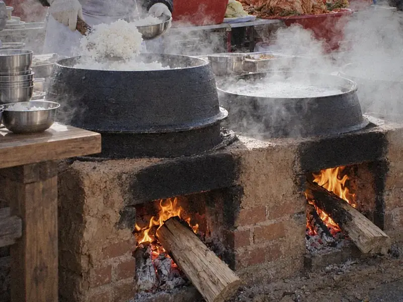
AI로 만든 임시 사진01 기획
축제 · 행사 기획
지역 축제와 시장 행사를 기획부터 운영·정산까지 맡습니다.
지난 축제 보기 →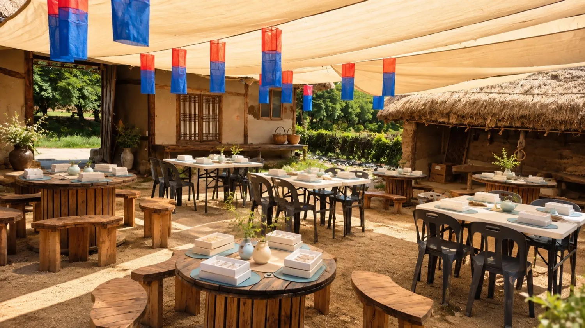
경북 안동 · 하회마을 · SINCE 2014
지역 축제를 기획하고, 하회마을에서는 전통혼례와 체험, 숙박 손님을 맞습니다.
SCROLL
01 소개
전통문화를 보존해야 할 유산으로만 소개하면 관공서는 좋아하지만 손님은 지갑을 열지 않습니다. 저희는 같은 것을 “하회마을에서 90분간 조선시대 주막을 직접 겪는 하루”처럼 구체적인 경험으로 만듭니다.
체험을 마친 손님은 그 자리에서 종가음식을 먹고, 안동 전통주와 특산품을 사서 돌아갑니다. 그리고 집에서 다시 주문합니다. 체험·식사·판매·재구매가 한 조합 안에서 이어지는 구조가 문화링크의 일하는 방식입니다.
조합원이 각자 흩어져 장사하면 남는 것이 없습니다. 공동 브랜드와 공동 고객 명부를 조합이 함께 소유하기 때문에, 시간이 갈수록 강해지는 쪽을 택했습니다.
02 사업
DRAG →

AI로 만든 임시 사진01 기획
지역 축제와 시장 행사를 기획부터 운영·정산까지 맡습니다.
지난 축제 보기 →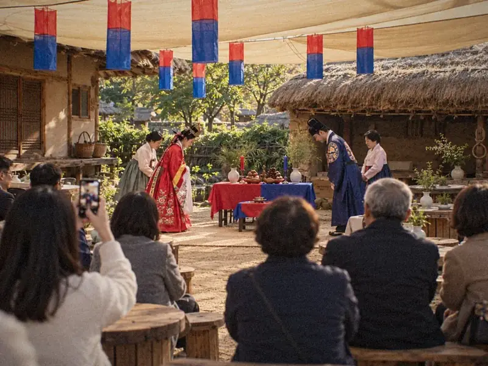
AI로 만든 임시 사진02 혼례
하회마을 안 120년 된 초가집 하회주막에서 전통혼례와 제사 의례를 직접 해 봅니다.
자세히 보기 →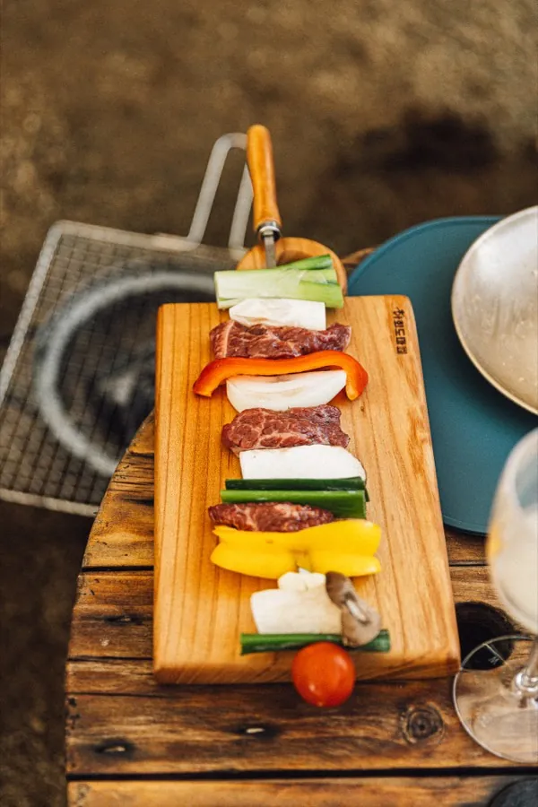
03 체험
가족과 단체가 하회마을 주막에서 종가음식을 직접 만들고 맛보는 90분 체험입니다.
자세히 보기 →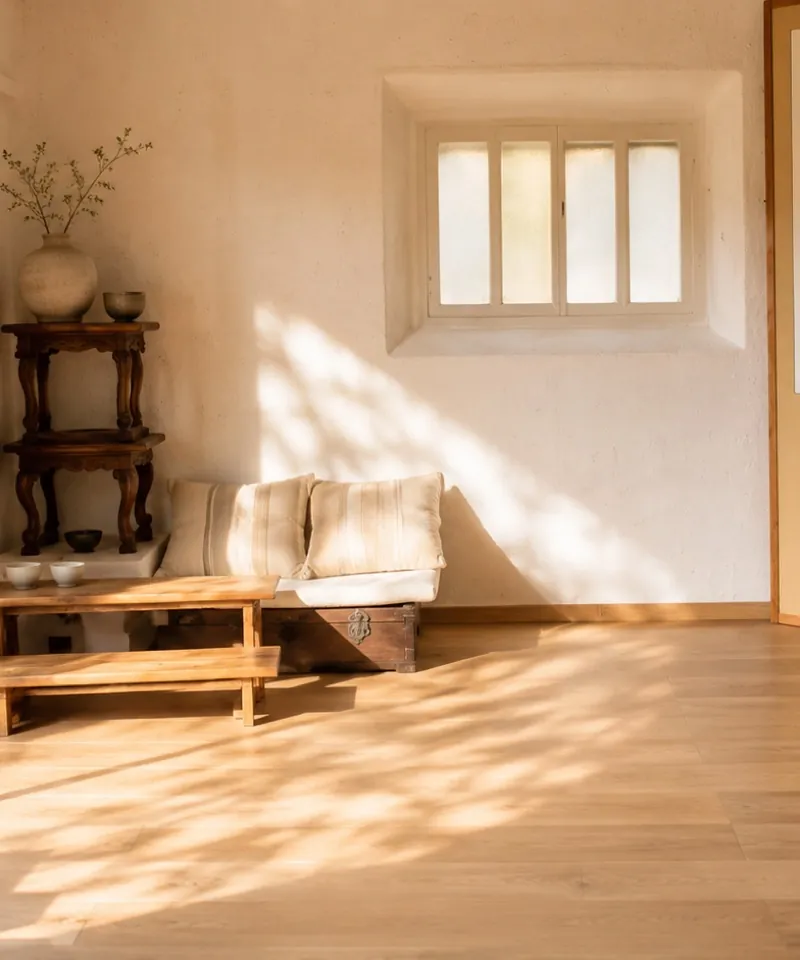
AI로 만든 임시 사진04 숙박
하회마을 숙소와 체험 공간을 운영하고, 한복과 행사 장비를 빌려 드립니다.
자세히 보기 →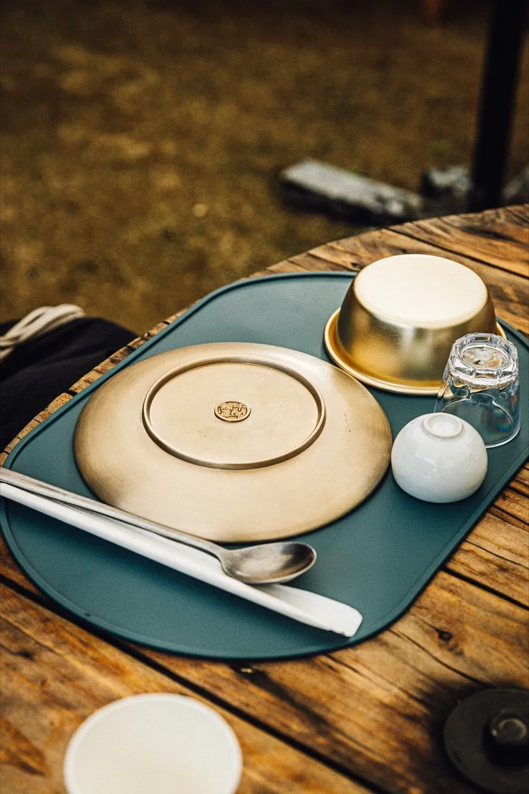
05 식사
체험이 끝난 자리에서 바로 이어지는 종가 상차림 식사를 운영합니다.
자세히 보기 →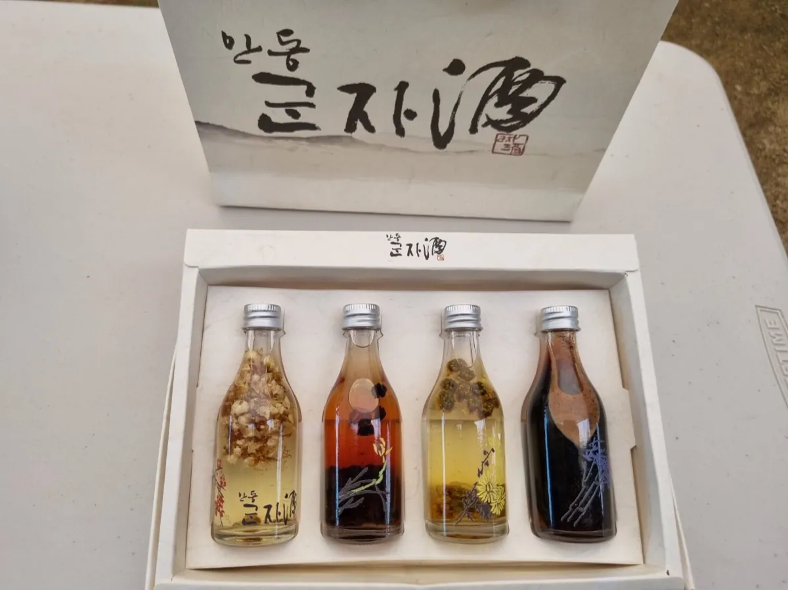
06 판매
안동 전통주와 특산품 선물세트를 현장과 온라인에서 판매합니다.
자세히 보기 →03 축제 기획
안동 전통시장의 축제를 상인회, 안동시와 함께 준비했습니다. 문화링크는 프로그램 기획과 운영을 맡았습니다.
함께한 곳안동시 · 소상공인시장진흥공단 · 북문시장상인회 · 풍산시장상인회
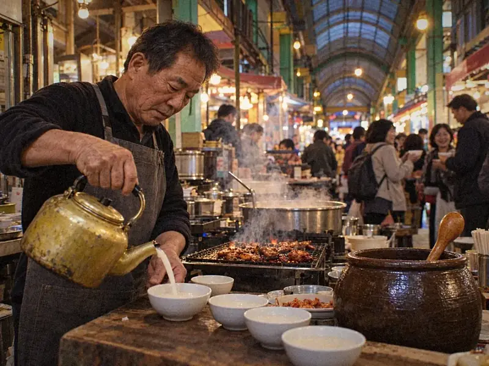
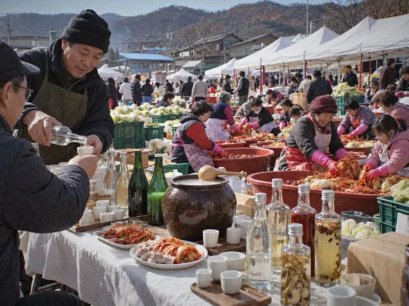
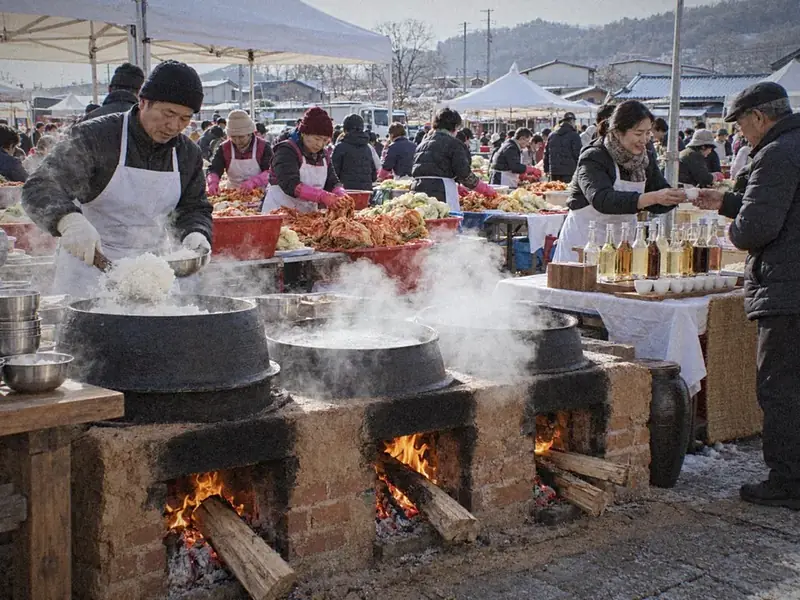
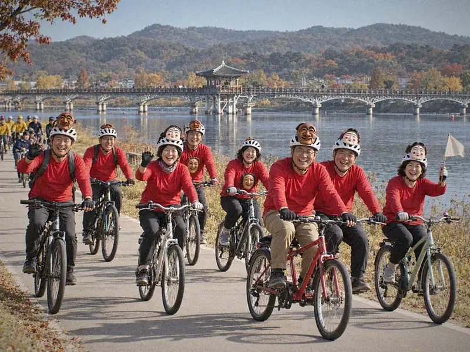
AI로 만든 임시 사진의뢰
지역 축제나 시장 행사를 준비하고 계시면 연락 주세요. 행사 시기와 장소만 정해져 있어도 괜찮습니다.
04 운영 구조
05 현장
DRAG →
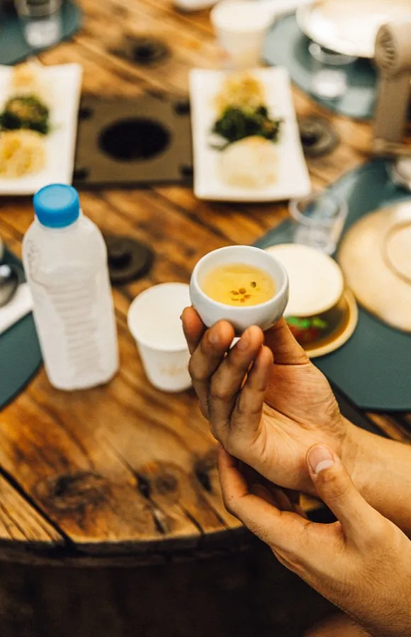
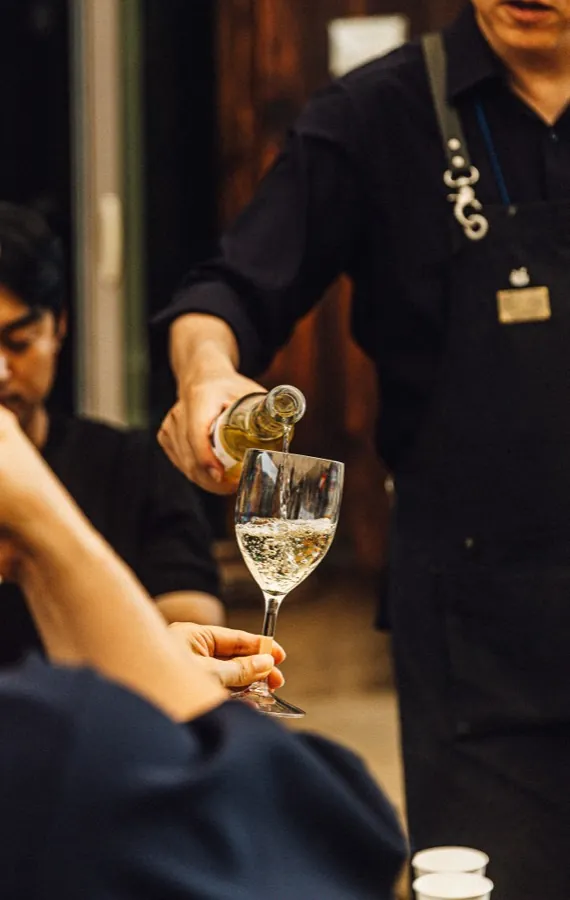
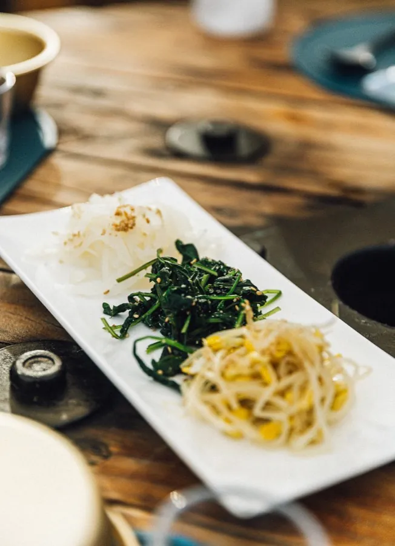
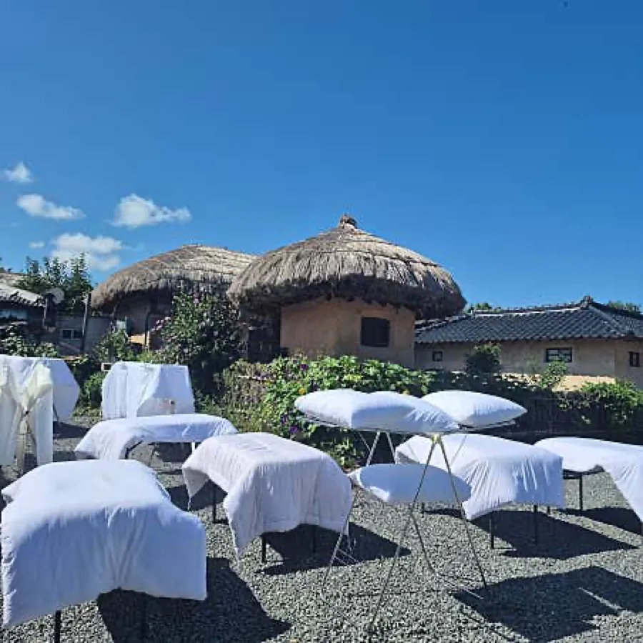
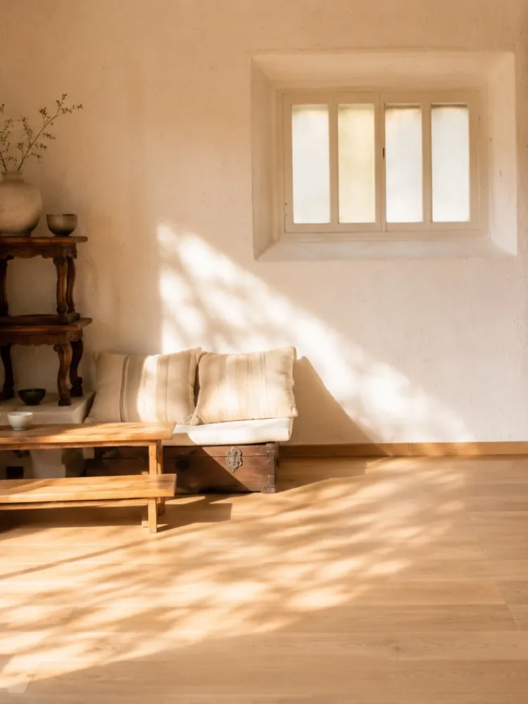
AI로 만든 임시 사진06 문의
단체 체험, 지자체·기관 행사, 특산품 입점, 조합원 참여까지. 안동에 오시기 전이라면 일정 조율부터 도와드립니다.